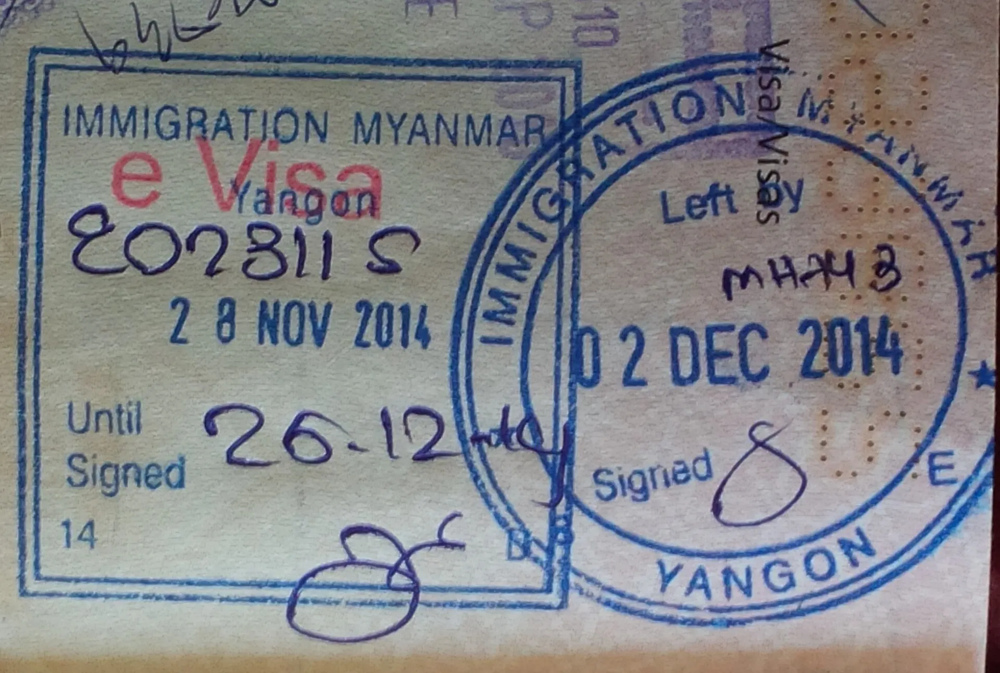

Política de cookies e información web
Qué cookies usa el sitio, cómo configurarlas y qué pasa si navegas con VPN.
La presente Política de Cookies y de Información Web regula el uso de tecnologías de almacenamiento local, rastreo digital, condiciones de conectividad y el tratamiento de datos generados durante la navegación en el portal web oficial y subdominios asociados de VISAS Y PASAPORTES COLOMBIA (en adelante denominada LA EMPRESA ASESORA). Esta política garantiza el derecho fundamental al Hábeas Data de los usuarios, en estricto cumplimiento del régimen colombiano de protección de datos personales.
1. DEFINICIÓN Y ALCANCE DE LAS COOKIES Y TECNOLOGÍAS SIMILARES
Cláusula 1.1 — Naturaleza y Operación Técnica
Una cookie es un pequeño archivo de texto y números que se descarga e instala en el navegador o dispositivo del usuario al acceder a páginas web. Su finalidad técnica principal consiste en reconocer al usuario en visitas posteriores, garantizar la estabilidad operativa de las sesiones de agendamiento, recordar preferencias y permitir la medición estadística agregada de tráfico.
El portal de LA EMPRESA ASESORA implementa cookies propias y de terceros prestadores de servicios tecnológicos, categorizadas estrictamente según su necesidad funcional y temporalidad.
2. INFORMACIÓN TÉCNICA Y PERSONAL RECOPILADA EN EL ENTORNO WEB
Cláusula 2.1 — Datos de Navegación, Formularios y Telemetría
A través de la navegación e interacción en la plataforma web, VISAS Y PASAPORTES COLOMBIA podrá recopilar:
- Registros del Servidor y Telemetría: Dirección IP de conexión, tipo y versión de navegador, sistema operativo, proveedor de servicios de internet (ISP), fecha, hora y duración de la sesión, así como páginas de procedencia y salida.
- Datos de Contacto y Solicitud: Nombres, apellidos, correo electrónico, número de teléfono/celular y país de interés migratorio suministrados voluntariamente mediante los formularios web de contacto, cotización o reserva de asesoría.
- Credenciales Temporales y Sesión: Identificadores anónimos de sesión requeridos para el correcto diligenciamiento asistido y el seguimiento de expedientes.
3. CLASIFICACIÓN E INVENTARIO DETALLADO DE COOKIES UTILIZADAS
Cláusula 3.1 — Inventario de Cookies y Finalidades Específicas
En observancia del principio de transparencia e información veraz consagrado por la SIC, a continuación se detallan las categorías de cookies implementadas en el portal:
| Categoría | Nombre / proveedor | Temporalidad | Finalidad y necesidad operativa |
|---|---|---|---|
| Técnicas / Necesarias | PHPSESSID, vyp_session, csrf_token (Propias) | Sesión (hasta el cierre del navegador) | Imprescindibles: Mantienen la sesión segura activa, previenen ataques de falsificación de peticiones en sitios cruzados (CSRF) y permiten la navegación fluida en formularios de múltiples pasos. |
| Seguridad y Protección | cf_bm, cf_clearance (Cloudflare / CDN) | 30 minutos a 1 año | Seguridad perimetral: Mitigan ataques distribuidos de denegación de servicio (DDoS), filtran tráfico malicioso automatizado (bots) y garantizan la disponibilidad ininterrumpida del sitio. |
| Analítica y Rendimiento | _ga, _ga_*, _gid (Google Analytics 4) | 24 horas a 2 años | Estadística agregada: Cuantifican el número de visitantes, fuentes de tráfico y comportamiento de navegación para mejorar la arquitectura técnica y el contenido informativo. (Datos anonimizados sin vinculación a perfiles consulares). |
| Preferencias del Usuario | vyp_cookie_consent, vyp_lang (Propias) | 6 meses a 1 año | Personalización: Registran la aceptación o configuración del aviso de cookies y el idioma preferido, evitando la visualización reiterada del banner informativo. |
4. MECANISMOS DE CONSENTIMIENTO, ACCIÓN AFIRMATIVA Y CONFIGURACIÓN
Cláusula 4.1 — Consentimiento Positivo y Deshabilitación por el Titular
ACCIÓN AFIRMATIVA DEL USUARIO: La aceptación de las cookies no esenciales (analíticas y de preferencias) se entenderá válidamente otorgada única y exclusivamente mediante la acción positiva y afirmativa del usuario en el banner o panel de configuración de consentimiento implementado en el portal, permitiendo al titular aceptar todas, rechazarlas o modular sus preferencias. Las cookies técnicas y de seguridad no requieren autorización previa al ser indispensables para la prestación del servicio web solicitado.
El usuario puede revocar su consentimiento, bloquear o eliminar las cookies en cualquier momento a través del enlace de configuración del sitio o directamente en su navegador:
- Google Chrome: Configuración > Privacidad y seguridad > Cookies y otros datos de sitios.
- Mozilla Firefox: Ajustes > Privacidad y seguridad > Cookies y datos del sitio.
- Apple Safari: Preferencias > Privacidad > Administrar datos del sitio web / Bloquear todas las cookies.
- Microsoft Edge: Configuración > Cookies y permisos del sitio > Administrar y eliminar cookies.
Nota operativa: La deshabilitación de cookies estrictamente necesarias puede degradar la funcionalidad del sitio o impedir el uso de los formularios interactivos de consulta y agendamiento.
5. USO DE REDES PRIVADAS VIRTUALES (VPN), PROXIES Y TECNOLOGÍAS DE ANONIMIZACIÓN
CLÁUSULA 5.1 — DISPOSICIONES DE SEGURIDAD SOBRE NAVEGACIÓN MEDIANTE VPN Y PROXIES
RESPONSABILIDAD POR CONDICIONES DE CONECTIVIDAD: El usuario es libre de acceder al portal web de LA EMPRESA ASESORA utilizando Redes Privadas Virtuales (VPN), redes anónimas (The Onion Router - Tor), servidores proxy o herramientas similares de ofuscación de tráfico digital. No obstante, EL CLIENTE reconoce y acepta que:
- Filtros de Seguridad Automatizados: Los sistemas perimetrales de protección (CDN/WAF) del portal podrán restringir, bloquear o solicitar verificaciones de seguridad adicionales (como pruebas CAPTCHA) ante direcciones IP reportadas en listas negras de ciberseguridad, nodos de salida sospechosos o con patrones de tráfico anómalo.
- Incompatibilidad con Plataformas Consulares Oficiales: La mayoría de los servidores gubernamentales y sistemas consulares oficiales extranjeros (tales como CEAC/AIS de Estados Unidos, IRCC de Canadá o MiConsulado de México) detectan y bloquean automáticamente el tráfico proveniente de conexiones VPN comerciales o proxies anónimos por estrictos protocolos de seguridad nacional y prevención de fraude migratorio.
- Descargo por Inconsistencias o Bloqueos: VISAS Y PASAPORTES COLOMBIA queda totalmente exonerada de cualquier responsabilidad por interrupciones de sesión, inconsistencias de localización geográfica, fallas en la verificación de doble factor, bloqueos temporales de IP o pérdida de datos en formularios web cuando estos se originen en el uso de herramientas VPN, túneles proxy o direccionamientos virtuales gestionados por el usuario.
6. SEGURIDAD DE LA INFORMACIÓN, TRANSFERENCIA Y CONSERVACIÓN DE DATOS
Cláusula 6.1 — Criterios de Custodia y No Comercialización
VISAS Y PASAPORTES COLOMBIA implementa medidas técnicas, administrativas y organizacionales razonables para proteger la información capturada en línea contra pérdida, acceso no autorizado o alteración. Los datos de navegación e información web:
- No son comercializados, cedidos ni transferidos a terceros para fines de publicidad no solicitada o explotación mercantil independiente.
- Se conservan durante el tiempo estrictamente necesario para cumplir las finalidades estadísticas o de soporte descritas, o hasta que el titular revoque válidamente su autorización.
- Son tratados bajo protocolos de confidencialidad legal por el personal y proveedores de hosting y analítica vinculados contractualmente.
7. CANALES DE HÁBEAS DATA Y PROCEDIMIENTO ANTE LA SUPERINTENDENCIA DE INDUSTRIA Y COMERCIO
Cláusula 7.1 — Ejercicio de Derechos de Acceso, Rectificación y Supresión
Cualquier titular puede ejercer sus derechos de conocer, actualizar, rectificar o solicitar la supresión de sus datos personales recopilados a través del portal web mediante comunicación dirigida a nuestros canales oficiales:
- Canal Oficial de Privacidad y Hábeas Data: privacidad@visasypasaportescolombia.com
- Canal Oficial de PQRS y Reclamos: pqrs@visasypasaportescolombia.com
Las solicitudes serán atendidas dentro de los términos perentorios fijados por la Ley 1581 de 2012 (máximo 15 días hábiles).
PARÁGRAFO LEGAL: VIGILANCIA DE LA SUPERINTENDENCIA DE INDUSTRIA Y COMERCIO (SIC)
DELEGATURA PARA LA PROTECCIÓN DE DATOS PERSONALES: La recolección de datos y el tratamiento de información en entornos web por parte de VISAS Y PASAPORTES COLOMBIA se encuentra formalmente sujeto a la vigilancia y control de la SUPERINTENDENCIA DE INDUSTRIA Y COMERCIO (SIC) en su calidad de Autoridad Nacional de Protección de Datos Personales.
RECLAMO PREVIO: De conformidad con el artículo 16 de la Ley 1581 de 2012 y el artículo 58 de la Ley 1480 de 2011, el titular deberá agotar en primera instancia el trámite de consulta o reclamo directo ante LA EMPRESA ASESORA a través de su canal institucional (privacidad@visasypasaportescolombia.com) antes de acudir en queja administrativa ante la SIC (www.sic.gov.co).
8. MODIFICACIONES A LA PRESENTE POLÍTICA
LA EMPRESA ASESORA se reserva el derecho de actualizar la presente Política de Cookies y de Información Web para adecuarla a novedades legislativas, jurisprudenciales o mejoras tecnológicas en la plataforma. Las modificaciones sustanciales serán publicadas en el sitio web con indicación de la fecha de su última actualización.
9. VALIDACIÓN Y EFICACIA PROBATORIA DEL CONSENTIMIENTO WEB
EFICACIA VINCULANTE Y CONSENTIMIENTO INFORMADO: De conformidad con la Ley 527 de 1999 sobre Comercio Electrónico y Mensajes de Datos, la Ley 1480 de 2011 y el artículo 854 del Código de Comercio de Colombia, la presente Política de Cookies y de Información Web no requiere firma física ni rúbrica manuscrita para su plena validez, eficacia probatoria y obligatoriedad.
La aceptación de las cookies no esenciales se entenderá otorgada mediante la acción positiva y verificable del usuario en el banner de consentimiento implementado en el portal, y el envío voluntario de formularios en línea o la contratación de servicios consulares a través de la web constituirá prueba idónea del conocimiento y aceptación plena de las condiciones aquí consagradas, incluidas las políticas de seguridad y las advertencias relativas al uso de tecnologías VPN o proxies.